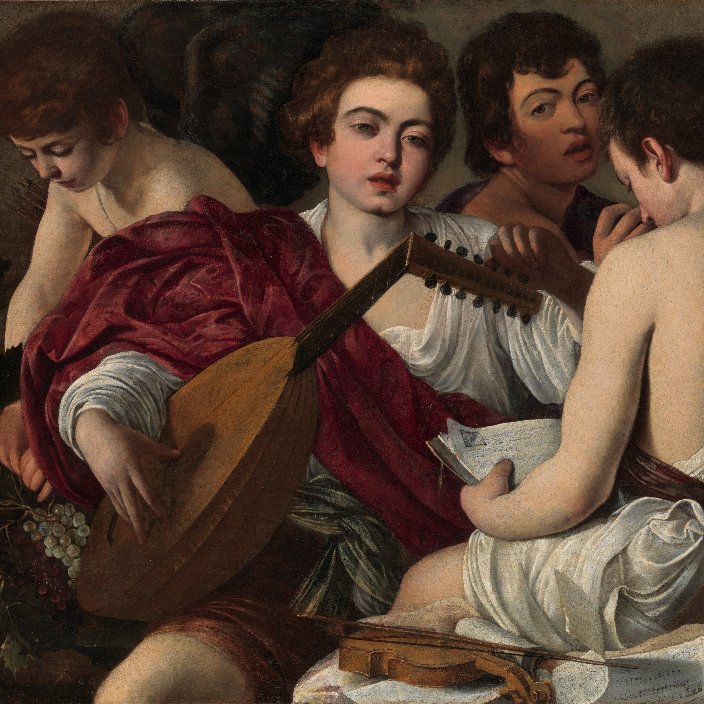

1. Music and Health

“Musick has charms to soothe a savage breast,” wrote William Congreve, an intuition now strongly supported by empirical research. Music has been shown to improve well-being, regulate emotions, and reduce stress, depression, and anxiety. Yet, the mechanisms underlying these effects remain insufficiently understood.
In my research, I investigate how music and other auditory stimuli influence stress and well-being, with a particular focus on psychophysiological processes such as heart rate variability, cortisol, alpha-amylase, and electrodermal activity. By integrating psychological and biological measures, I aim to better understand how sound can be used as an effective tool for health.